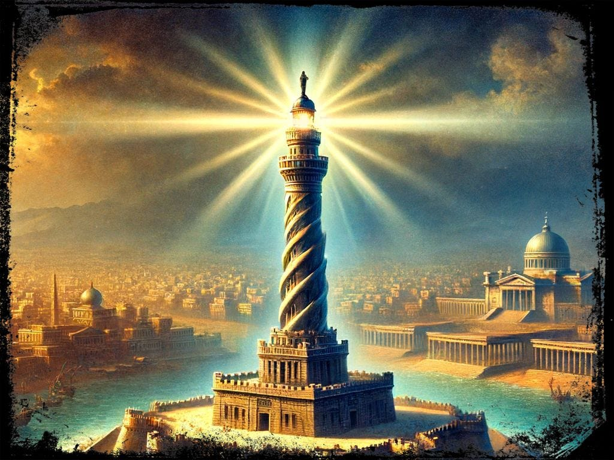
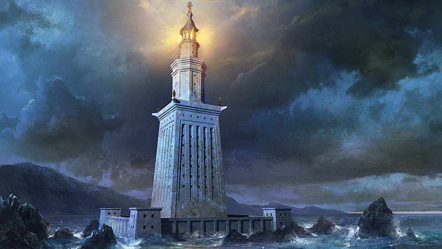

Ubicación: Egipto. Autor: Sóstrato de Cnido. Construcción: h. III a.C. Altura: 100 m aproximadamente. Estado: destruido por los terremotos del siglo XIV.
El Faro de Alejandría ocupa el tercer lugar en duración entre todas las maravillas antiguas. Se ubica en la isla de Faro (Pharos), en Egipto. Fue construido durante la dinastía ptolemaica, hacia el siglo III a.C. y se mantuvo en pie por varios siglos, hasta que diversos terremotos ocurridos entre 956 y 1323 la dejaron en ruinas. En el siglo XV, se ordenó construir sobre sus ruinas el fuerte de Qaitbay.
De acuerdo con diversos relatos, el faro tenía una altura no menor a cien metros, y una base de unos 90 m². El diámetro del primer tramo o nivel pudo haber alcanzado los 16,4 metros de ancho; el segundo tramo unos 8,7 metros y, la cúspide, 4,3 metros aproximadamente. Tuvo también una monumental rampa de acceso, con medidas de 300 metros de largo por 10 metros de ancho..